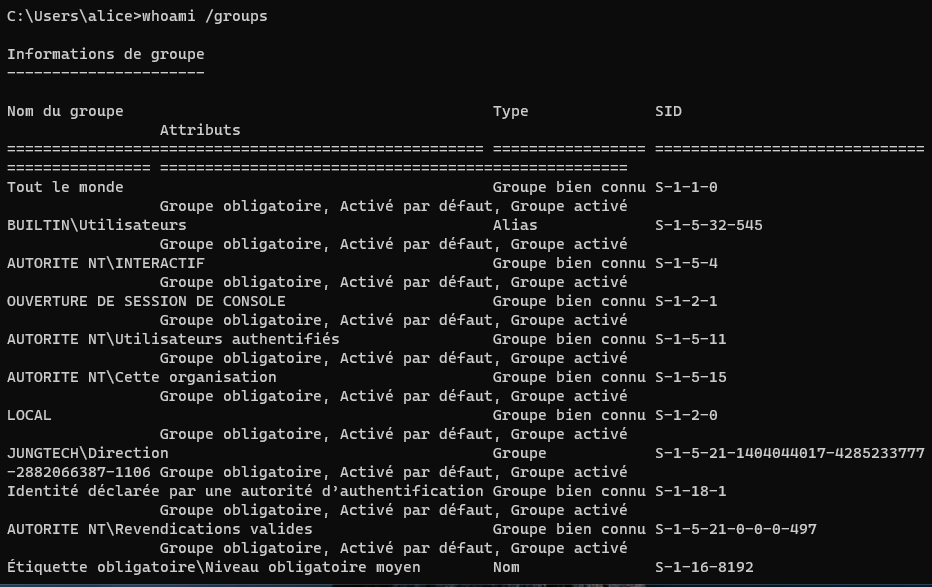
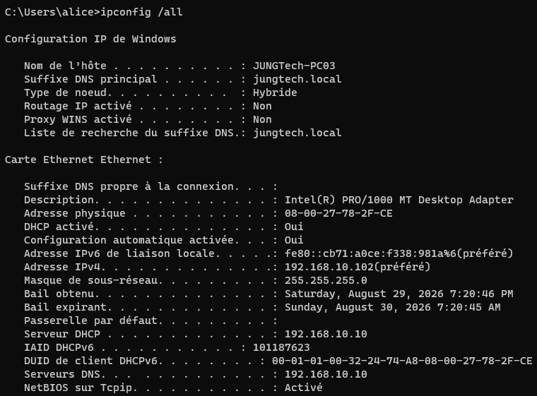
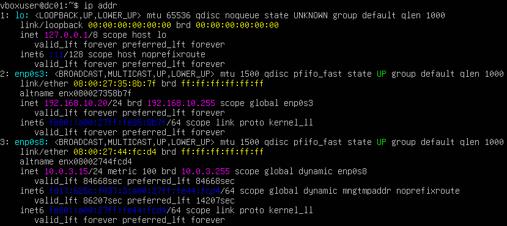
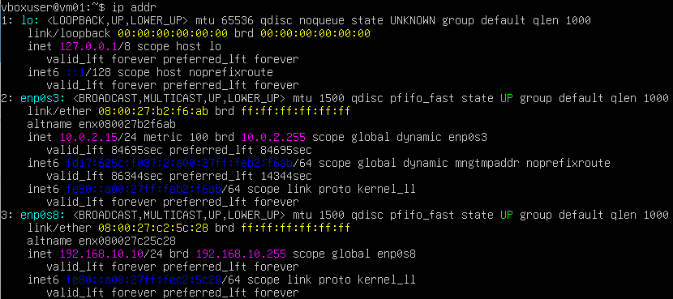
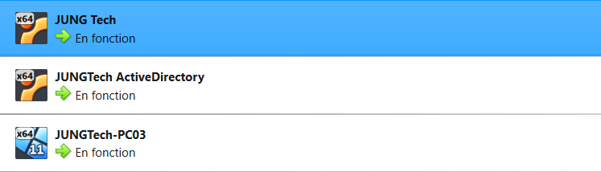
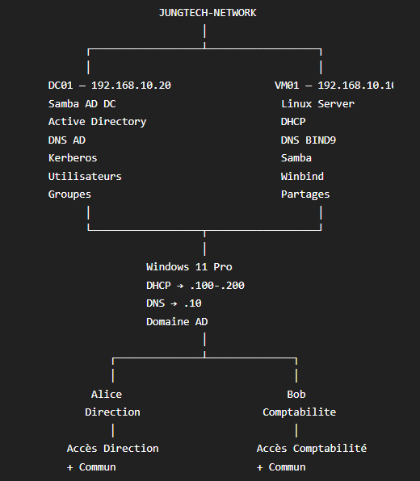

JungTech — Infrastructure systèmes & réseaux
Conception et mise en place d'un laboratoire d'infrastructure virtualisé.
Reproduire une infrastructure d'entreprise
L'objectif de JungTech est de reproduire, à petite échelle, les briques réseau et systèmes que l'on retrouve dans une infrastructure d'entreprise.
- Mettre en place un réseau interne
- Automatiser l'attribution des adresses IP
- Mettre en place une résolution DNS interne
- Centraliser les utilisateurs avec Active Directory
- Permettre l'authentification des postes Windows
- Mettre en place des partages de fichiers
- Gérer les accès aux ressources à l'aide de groupes
- Permettre l'administration des serveurs à distance
Schéma de l'infrastructure
Réseau JungTech-Network, adressage 192.168.10.0/24.
Composants du laboratoire
Automatisation de la configuration réseau
VM01 fournit automatiquement l'adressage IP aux clients du réseau JungTech-Network. Le poste Windows 11 récupère ainsi son adresse IP et son serveur DNS sans configuration manuelle.
Résolution de noms interne
VM01 héberge le service DNS interne avec BIND9. Il permet notamment de résoudre le nom du contrôleur de domaine et d'exposer les enregistrements nécessaires au bon fonctionnement d'Active Directory.
Centralisation des utilisateurs et des groupes
Le domaine Active Directory JUNGTECH.LOCAL est hébergé sur DC01 (Samba Active Directory Domain Controller). Les droits d'accès aux ressources sont gérés via des groupes plutôt que directement par utilisateur, ce qui centralise et simplifie l'administration.
Deux rôles distincts pour Samba
Samba est utilisé à deux endroits du laboratoire, avec deux rôles bien séparés :
DC01
Samba Active Directory Domain Controller — héberge le domaine, l'annuaire LDAP et Kerberos.
VM01
Samba serveur de fichiers — héberge les partages réseau accessibles aux utilisateurs du domaine.
Winbind est utilisé sur VM01 pour intégrer la machine à l'Active Directory et récupérer les utilisateurs et groupes du domaine. Il ne s'agit pas d'un contrôleur de domaine : Winbind permet uniquement à VM01 de faire le lien avec l'annuaire hébergé sur DC01.
Authentification au sein du domaine
Kerberos est utilisé pour l'authentification des utilisateurs et des machines au sein du domaine Active Directory. Il est fourni dans le cadre de Samba Active Directory Domain Controller, et n'a pas été développé ou configuré de manière indépendante.
Partages hébergés sur VM01
Trois partages sont mis à disposition sur VM01 : Commun, Direction et Comptabilite. L'accès à chaque partage est conditionné par l'appartenance à un groupe Active Directory.
Poste client Windows 11
Le poste Windows 11 reçoit automatiquement son adressage réseau par DHCP, est joint au domaine JUNGTECH.LOCAL et s'authentifie auprès de l'Active Directory hébergé sur DC01. Une fois authentifié, l'utilisateur accède aux partages réseau hébergés sur VM01 selon les groupes AD auxquels il appartient.
Validations fonctionnelles du laboratoire
Ensemble des vérifications réalisées pour confirmer le bon fonctionnement de l'infrastructure.
Aperçu du laboratoire
Quelques captures d'écran du laboratoire virtuel JungTech.






Ce que ce projet m'a permis de mettre en pratique
JungTech est un laboratoire personnel réalisé en environnement virtualisé : il ne reproduit pas les conditions d'une infrastructure de production réelle, mais m'a permis de mettre en pratique l'administration Linux, les réseaux, le DNS, le DHCP, Active Directory, l'authentification, le partage de fichiers, la gestion des droits par groupes et l'administration d'une infrastructure virtualisée dans son ensemble.